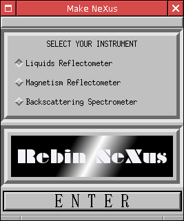
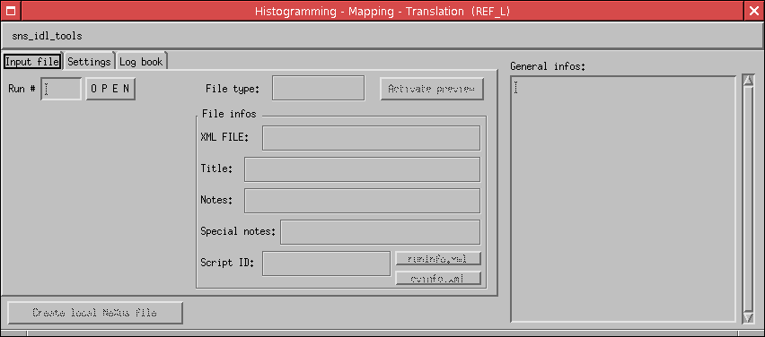
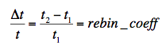
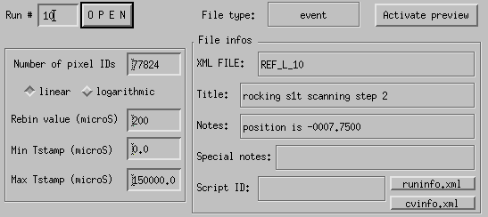
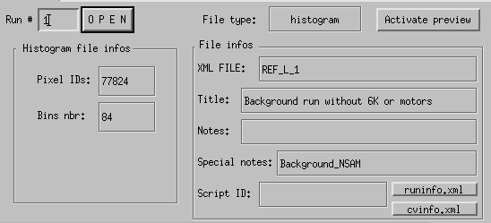
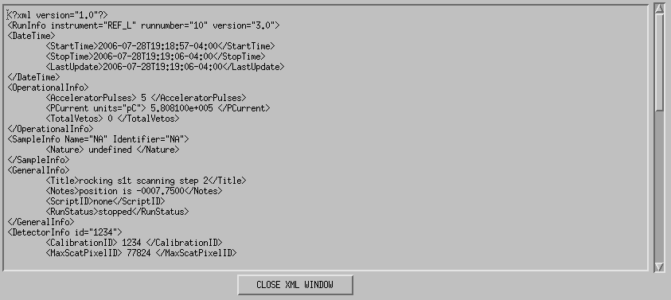
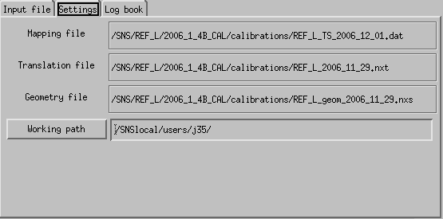

From the sns_idl_tools portal, to reach the rebinNeXus idl tools, select rebinNeXus, click 'launch application' and click the IDL virtual machine flash window.

Select your instrument and press ENTER.
INTRODUCTION
rebinNeXus is a tool that allows the user to create a local (~/ucams/local/) NeXus file. rebinNeXus takes a run number as argument and will look for the archive NeXus file first, then for the preNeXus files on the DAS server. It is then possible to create a local NeXus file from an already archived NeXus file or from the preNeXus files. One must keep in mind that the new NeXus file created using this tool will not be archived.
GUI
All three instruments will then present the same GUI at that point. Only the PREVIEW window will change from one instrument to the other.

The main gui is composed of 3 tabs, Input file,
Settings and Log book.
- Input file
The left side of the Input file tab populates once a run number has been loaded. It differs if the input file is in event or histogram mode.
- Event file:
- The number of pixelIDs is predefined accordingly to the instrument (77824 for REF_L and rEF_M, 9216 for BSS). This field is editable but must be use with cautious.
- Two histogramming mode are possible: linear and logarithmic. The next text box label reflects the histogramming mode selected. If this on is linear, the label is rebin value that is the time bins width (in microS). If the mode selected is logarithmic, the label is rebin coefficient, which corresponds to the following equation:

- Min Tstamp and Max Tstamp are the minimum and maximum time stamps of the histogramming file.

- Histogramming file:
- Pixelids is, line in the case of the event file, the number of pixel IDs for the instrument selected (77824 for REF_L and REF_M and 9216 for BSS).
- Bins nbr the number of bins found in the histogram file.
Due to the fact that the input file is a histogram mode, it is not possible to rehistogram that file but only use the data as they are.

The top part of this tab gives the type of the file loaded (event or histogram) and offer the possibility to get or not a preview of the data (integrated over time). This preview will differ from one instrument to the other (256x304 for REF_L, 304x256 for REF_M and 2x64x64 for BSS) as shown here:
The rigth side of the Input file tab gives some very generic information about the run:
- XML FILE: the matrix of the preNeXus and NeXus files for this run.
- Title: the tile of the run as given by the title field of the runinfo file.
- Notes: the notes found in the same preNeXus file
- Special notes: field of the same name found in same the preNeXus file
- Script ID: script ID field from runinfo preNeXus file
The runinfo.xml and cvinfo.xml buttons allows to display the contents of these two files.

- Settings
In this tab, you can visualize which mapping file, translation file and geometry file the program is going to use to create the NeXus file. The program automatically determines the last up to date mapping, translation and geometry files.
